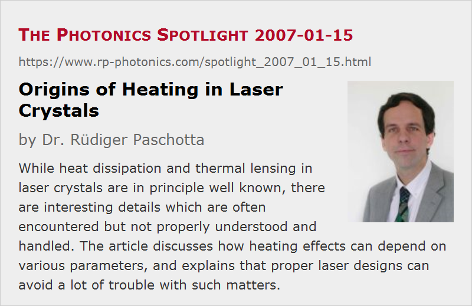

Origins of Heating in Laser Crystals
Posted on 2007-01-15 as a part of the Photonics Spotlight (available as e-mail newsletter!)
Permanent link: https://www.rp-photonics.com/spotlight_2007_01_15.html
Author: Dr. Rüdiger Paschotta, RP Photonics Consulting GmbH
Abstract: While heat dissipation and thermal lensing in laser crystals are in principle well known, there are interesting details which are often encountered but not properly understood and handled. The article discusses how heating effects can depend on various parameters, and explains that proper laser designs can avoid a lot of trouble with such matters.

Ref.: encyclopedia articles on thermal lensing, quantum defect, laser crystals, laser design
While the general effect of heat dissipation in laser crystals is very well known, also its consequence of thermal lensing, many uncertainties exist concerning the details. For example, is it more the pump intensity or also the laser intensity which determines the dissipated power density? How does this depend on resonator losses? And why do different crystals appear to behave differently in such respects?
In fact not only the details of the crystal are important, but also certain key parameters of the laser design, such as the lasing wavelength, focusing conditions and resonator losses. Without any lasing, even a perfect laser crystal, not exhibiting any parasitic processes such as quenching, would show some heating when being pumped. The average number of photons absorbed and emitted by the laser-active ions within some time interval may not substantially increase when lasing occurs, unless the pump absorption efficiency of the crystal (not of single ions!) is significantly decreased without lasing (→ saturation of pump absorption). The dissipated heat per photon can be larger or smaller with lasing, depending on the deviation of the laser wavelength from the average wavelength of spontaneous emission. In this respect, some ytterbium-doped gain media show quite a different behavior from the usual Nd:YAG or vanadate lasers. While some lasers are in danger of having their crystal fractured when the resonator is blocked, the crystals of others become even cooler under such conditions.
Additional effects come into play via parasitic processes. Quenching processes usually become stronger for higher upper-state populations and thus for higher resonator losses. Therefore, some Q-switched lasers are plagued by much stronger thermal lensing than the same lasers in continuous-wave operation (with the Q switch turned off). How strong that effect is, depends on the crystal quality and particularly the doping concentration, apart from design aspects as mentioned above. Unfortunately, the reproducibility can suffer when the crystal quality varies; one may have to take into account such variations in the laser design, which is possible by choosing appropriate parameters (e.g. for the required upper-level population) and also in the context of resonator design.
The complexity of such issues (or the absence of the related know-how) leads many to resign and just go for the trial-and-error approach. This may not be very efficient, however. Imagine for example the trouble which can occur when the results of the nicely tweaked prototype can not be reliably reproduced in production! A proper laser design does not only lead to a prototype with satisfactory performance, but also minimizes the dependence on variable parameters. Furthermore, a well done design will make it easier to understand and realize the potential for later improvements e.g. in terms of output power.
It is surprising indeed how many companies nevertheless stay with the muddle-through approach. Maybe this happens because people don't even know about alternative approaches, or got frustrated when trying this with insufficient experience.
This article is a posting of the Photonics Spotlight, authored by Dr. Rüdiger Paschotta. You may link to this page and cite it, because its location is permanent. See also the RP Photonics Encyclopedia.
Note that you can also receive the articles in the form of a newsletter or with an RSS feed.
Questions and Comments from Users
Here you can submit questions and comments. As far as they get accepted by the author, they will appear above this paragraph together with the author’s answer. The author will decide on acceptance based on certain criteria. Essentially, the issue must be of sufficiently broad interest.
Please do not enter personal data here; we would otherwise delete it soon. (See also our privacy declaration.) If you wish to receive personal feedback or consultancy from the author, please contact him e.g. via e-mail.
By submitting the information, you give your consent to the potential publication of your inputs on our website according to our rules. (If you later retract your consent, we will delete those inputs.) As your inputs are first reviewed by the author, they may be published with some delay.
|  |
If you like this page, please share the link with your friends and colleagues, e.g. via social media:
These sharing buttons are implemented in a privacy-friendly way!